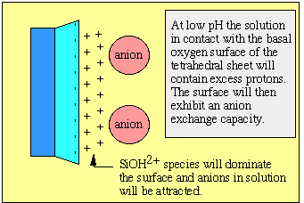

19 - Lecture notes for Clay
Mineralogy
The Geochemistry of clay minerals
Suggested
reading:
Reading: Newman
203-236
Equilibrium adsorption and ion exchange.
The typically small grain size (<2
µm)
of clay minerals results in the presence of large surface areas. These
surface
areas are available for exchange of ions and molecules between the
solids
and surrounding solutions.
Exchange of ions involves adsorption and desorption
which
are commonly fast (on geological time scales).
This exchange process can be treated as an equilibrium process.
The kinetics of adsorption in natural environments is poorly understood
(implications for waste treatment and disposal).
Adsorption takes place because of the attraction of ions to a
surface.
The strength of the bonding varies from weak van der Waals (physical
adsorption)
to moderate absorbtion (electostatic adsorption) to strong chemical
bonds (chemisorption), henceforth simply referred to
as adsorption.
This process involves neutral species (H2O,
H4SiO4,
organic molecules) and ions.
Example of kaolinite: Notice in the schematic diagram below
that
for 1:1 structures, positive ions are attracted to the light-blue
tetrahedral
basal oxygen surface. At the same time, negative ions are attracted to
the
dark-blue octahedral hydroxyl surface.
Example of vermiculite or smectite. The case for low-charge 2:1
structures
is notably different from 1:1 structures. The schematic diagram below
shows
that 2:1 structures have mostly positive ions are attracted to the
light-blue
tetrahedral basal oxygen surfaces.
Surface charge properties
One way in which surface charge can develop is by adsorption of an ion
where
the solid acts as an electrode. (e.g., H+ and OH- on the surfaces
of clays).
In clay-aqueous systems the potential of the surface is determined by
the
activity of ions (e.g., H+ or pH) which react with the mineral surface.
The simultaneous adsorption of protons and hydroxyls as well as other
potential
determining cations and anions, leads to the concept of zero point
of
charge or ZPC, where the total charge from the cations and
anions
at the surface is equal to zero.
The charge must be zero and this does not
necessarily
mean the number of cations versus anions in the solution are equal. For
clay minerals the potential determining ions are H+ and OH-
and complex ions formed by bonding with H+ and OH-.
For example on the basal oxygen surface of kaolinite or illite, the O2- ions bond with H+ to form
hydroxyls.
These surfaces further react as either acids or bases with other
protons
or hydroxyls: The surface charge is therefore, pH dependent. The broken
Si-O bonds and Al-OH bonds along the surfaces of the clay crystals
result
in hydrolysis.
Low pH
MOH + H+
--> MOH2+
High pH
MOH + OH--->
MO- +
H2O
The potential at the surface
is determined by the activity of these ions given by the Nernst
Equation,
where:
At equilibrium, the electric potential (E) is equal to the standard
state electric potential
(Eo)
and the relationship:
E = Eo
- (RT/nF) ln (a/ao)
where: R = gas constant (8.314 J mol-1 K-1), F=
Faraday constant (96,485.3399 coulomb/mole), T = temperature in Kelvin,
n = number of molar equivalents of electrons
transferred
The pH that corresponds to the
ZPC is referred to as the pHZPC or the isoelectric
point.
1. With pH's below the pHZPC the solid has would have anion
exchange
capacity.

2. pH's at the pHZPC , the solid would
have no exchange capacity.
3. pH's above the pHZPC, the solid
would
have cation exchange capacity.
Table of pH for zero point of charge for clay
minerals.
Note that in Georgia Piedmont soils, the typical pH is below 4, in
Georgia
estuarine systems typical pH is 7.5.
|
Mineral
|
pHZPC
|
|
Gibbsite
|
10
|
|
Hematite
|
4.2 - 6.9
|
|
Goethite
|
5.9 - 6.7
|
|
Na-feldspar
|
6.8
|
|
Kaolinite
|
2 - 4.6
|
|
Montmorillonite
|
<2 - 3
|
|
Quartz
|
1 - 3
|
Note that Al and Fe hydroxides have a high pHZPC
.
Kaolinite and montmorillonite have low pHZPC.
The ZPC is determined from a titration curve where pH is varied (see
figure
3.2 from Eslinger and Pevear).
The adsorption of
potential-determining
ions results in the development of a electric double layer.
inner layer - fixed and contains potential determining ions
outer layer - mobile diffuse layer of freely moving counter ions
There are numerous models devised to predict the distribution of
surface-species.
The two simplest models that give a reasonable representation of the
ion
distributions are the Gouy and Stern models.
See figures 3.3 and 3.4 from Eslinger and Peaver
Potential determining ions need not be protons and hydroxyl.
Organic anions from the dissociation of humic and fulvic acids.
Deprotonated
carboxyl groups (e.g., RCOO-).